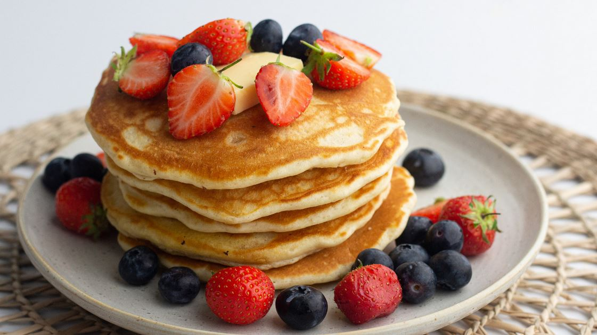

Odin Recipes
Pancakes

Description:
This is a great recipe that I found in my Grandma's recipe book. Judging from the weathered look of this recipe card, this was a family favorite.
Ingredients:
- 1 1/2 cups all-purpose flour
- 3 1/2 teaspoons baking powder
- 1/4 teaspoon salt, or more to taste
- 1 tablespoon white sugar
- 1 1/4 cups milk
- 1 egg
- 3 tablespoons butter, melted
Steps:
- Sift flour, baking powder, salt, and sugar into a large bowl
- Make a well in the center of the mix and pour in milk, egg, and melted butter
- Mix until smooth
- Heat a frying pan to medium-high heat
- Use 1/4 cups of batter approx. for each pancake, cook both sides